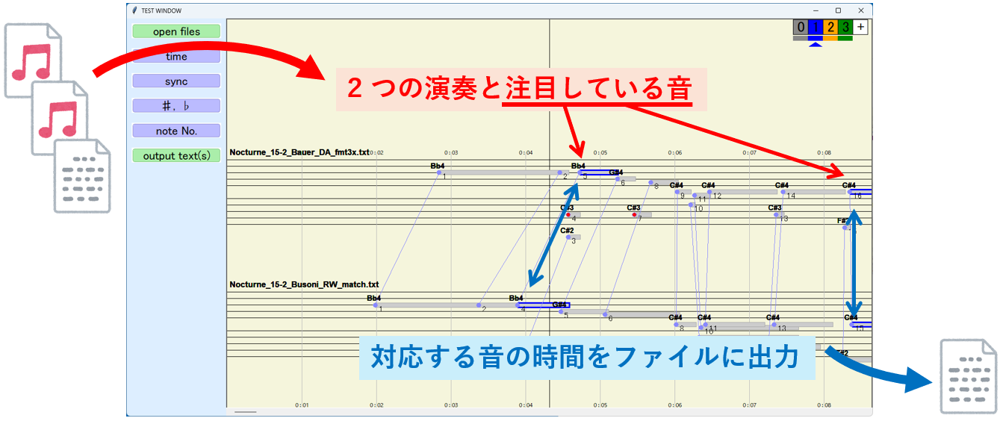
2 つの MIDI ファイル(参照演奏と対象演奏)と，参照演奏内の注目したい音の時間を記録したテキストファイルを準備すると， 対象演奏側の注目したい音の時間をファイルに出力するシステムです(図 1 )． (音の時間を記録したテキストファイルは無くても手動での設定もできます．)
手順としては，
全体として目次は以下の通りです．
本システムの前に 2 つの演奏のマッチング情報を取るために中村先生のシステムを使用します． 中村先生のシステムの使い方を簡単に紹介します． 詳細ついては，下記の (2) で解凍したフォルダの中に MANUAL.pdf がありますのでそちらをご覧ください．
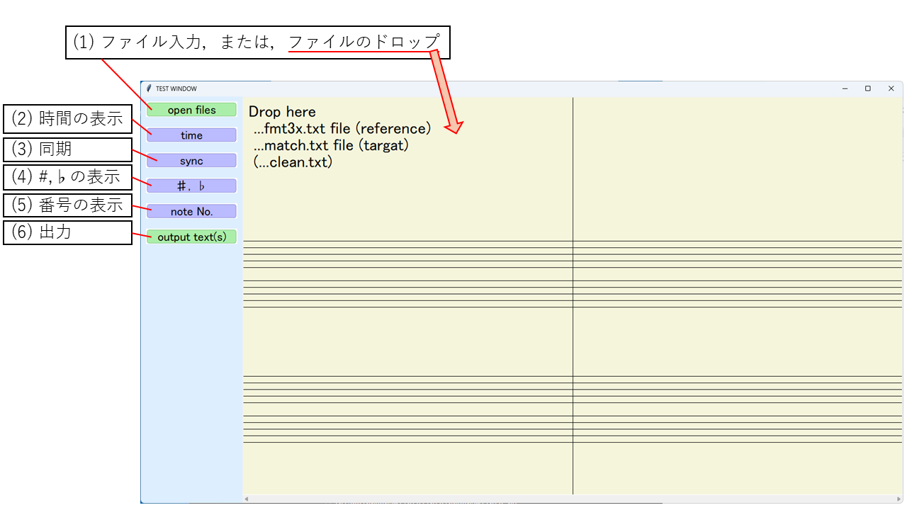
ダウンロードしたファイルは圧縮している状態なので解凍(展開)してください． 解凍(展開)後，フォルダ内に 「into_20260303_windows(.exe)」または 「into_20260303_mac(.app)」 のがありますのでダブルクリック等で実行するとプログラムが動きます． (アプリの起動に若干間があることがあるようです．)
プログラムを実行すると図 2 のようなウインドウが表示されます． 重要な (1) ファイルの入力と (6) 出力についてはこの後に， 「ファイルの入力と操作方法について」 「参照演奏側の注目したい音の入力について」 「対象演奏側の注目したい音の保存について」 して順位説明し， (2)～(5) は後で補助機能として補足的に説明します．
図 2 の (1) はファイルの入力です．ファイルをウインドウ内に直接ドラッグ & ドロップしても入力できます． 対応ファイルは，中村先生のシステムで生成した *_fmt3x.txt， *_match.txtと， 注目したい音の時間を記録した *_clean.txt です． (* 部分は任意の文字列です．)
図 3 は 本システムに*_fmt3x.txtを入力した状態です． 図 4 は さらに続けて*_match.txtを入力した状態です． *_fmt3x.txtと*_match.txtを 2 つ同時に入力しても問題ありません．
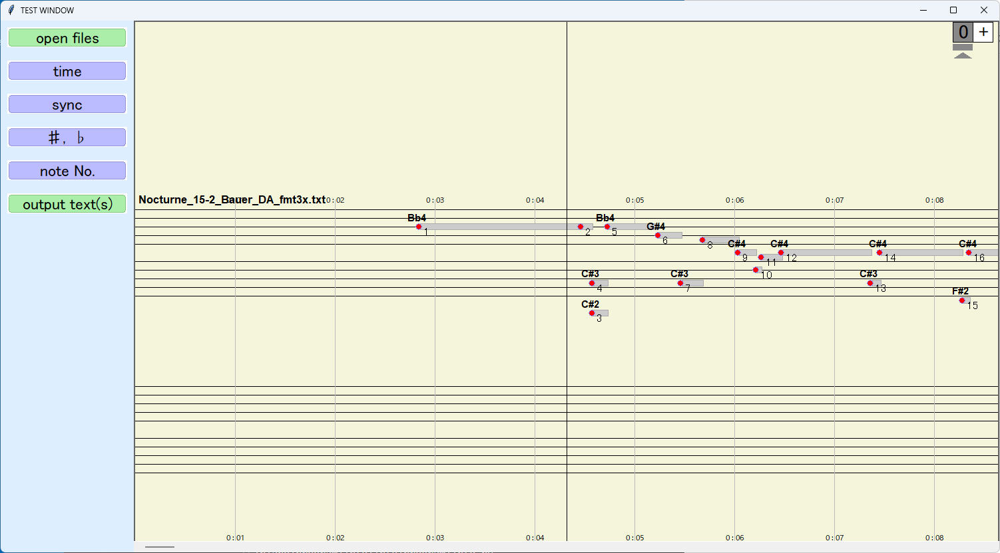
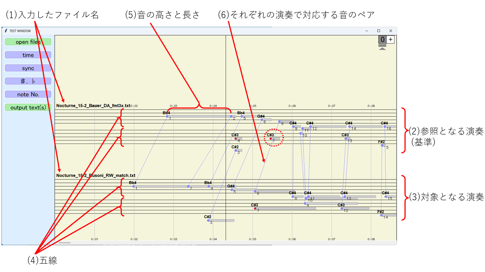
図 4 では， 入力したファイル名が表示され(図 4 (1))， 上側に参照となる参照演奏が表示(図 4 (2))され， 下側に対象となる対象演奏が表示(図 4 (3))されます． 演奏はそぞれれの打鍵状態の音の高さを五線上(図 4 (4))の位置に， 音の長さを長さとしてバー(図 4 (5))で表示されます． 参照演奏と対象演奏のそれぞれの演奏で対応する音(バー)はペアとして線で結ばれます(図 4 (6))． 点線の赤丸で囲まれた音(バー)のように線で結ばれてない場合はペアの音が存在しない音(バー)であると判断された音(バー)になります．
本システムの基本的な操作方法は表 1 の通りです． 画面上のマッチングを編集する操作については，マッチングの修正に載せています．
| 入力 | 内容 |
|---|---|
| ウインドウ下部のスクロールバー，または，矢印(←，→)キー | 画面を左右にスクロールします． |
| 矢印(↑，↓)キー | 楽譜の左右の幅を拡大，縮小します． |
入力するファイル *_clean.txt は次のように注目したい音の時間と番号(1 からの順)になっています． これは Sonic Visualiser などで作ることができます． また，ファイルがない時は手動での設定もできます．
4.735941043 1 8.359387755 2 12.531292517 3 16.390589569 4 20.914104308 5 ...
注目する音(バー)はレイヤーで管理しています． 画面の右上の白い四角内にある [ + ] をクリックするとクリックした回数だけレイヤーが 1, 2, 3, ... と増えます． 例えば 3 回クリックすると図 5 のように 1 番から 3 番までのレイヤーが増えます． ちなみに，レイヤー 0 番はマッチングの情報を管理するための特別なレイヤーで， 詳しくは後で説明します．
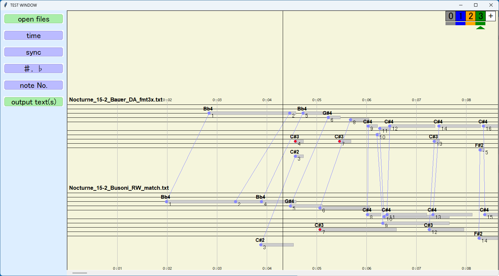
ここで，(0 以外の) 青色の [ 1 ] と書かれたレイヤーを選びます．選ばれたレイヤーには下に▲が付きます． その状態で，先ほど準備した *_clean.txt をウインドウ内にドラッグ & ドロップすると 図 6 のように注目する音にレイヤーと同じ色(今回は青色)の枠が付きます． さらに，対象演奏側でマッチングしている音にも自動的に青色の枠が付いているのが分かると思います．
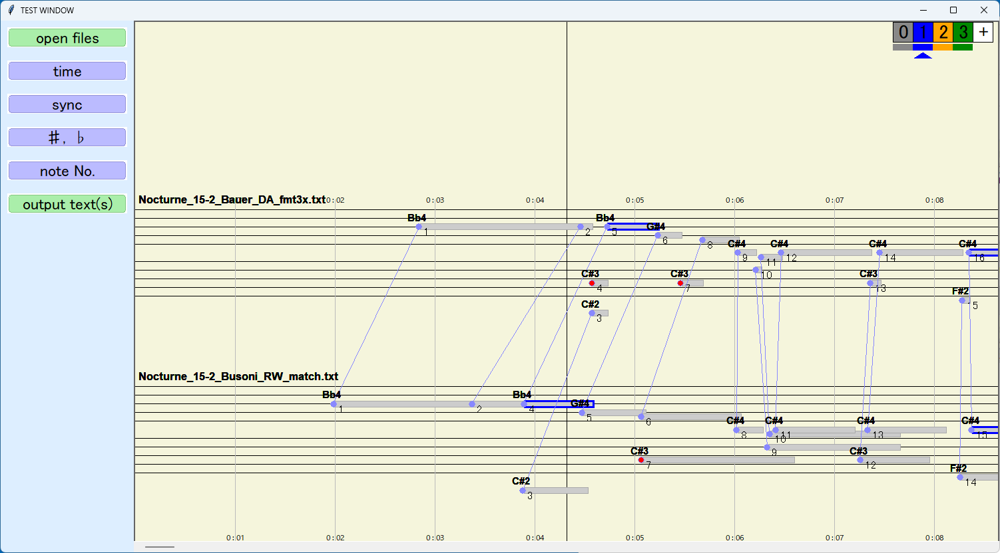
ここでは簡単にレイヤーを紹介しましたが，詳細についてはレイヤーの説明を見てください．
注目する音(バー)の保存は保存したいレイヤーを選んだ状態(保存したいレイヤーの下に▲がある状態)で， 左側のメニューの「output text(s)」をクリックします． 保存先を聞かれますのでフォルダを選ぶと， *_fmt3x_times.txt(参照演奏側の情報)と *_match_times.txt(対象演奏側の情報)という 2 つのファイルができます． このファイルはどちらも以下の様に 「番号，音(バー)の始まりの時間，音(バー)の終わりの時間，音(バー)の長さの時間」 となっています． 現在は，このデータを Sonic Visualiser などで利用することを想定していたので， 本システムでの再利用はできません．今後の課題です．
1 2.851 4.467 1.616 2 4.467 4.582 0.115 3 4.735 5.240 0.505 ...
注目する音は *_clean.txt で設定することもできますが， 個別に設定することもできます． 設定するには参照演奏の音(バー)をクリックしてください． 図 7 は左側の図が元の状態で， 右側の図は 6.5 秒頃にある C#4 の音(バー)をクリックした後の状態です． クリックした音(バー)とそれにマッチングしている対象演奏側にも青い枠が付いていることが分かります． (また，ここで注意して欲しいのは，右上の青色の [ 1 ] に▲がついていることです．[ 0 ] には追加できません．)
一般的に，多くの音(バー)をクリックするのは大変なので 参照演奏側の注目したい音の入力についてのようにファイルを準備した方が良いです．
もう一度クリックすると削除できます．バーの中央辺りをクリックすると追加や削除の操作がしやすいです．
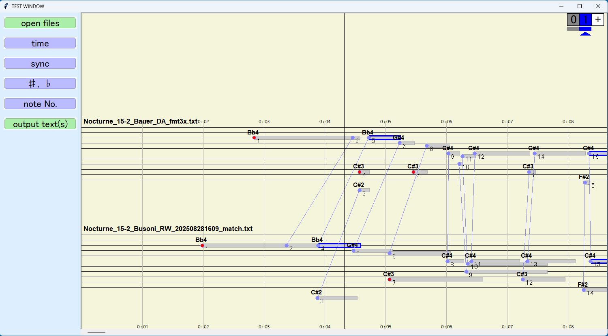
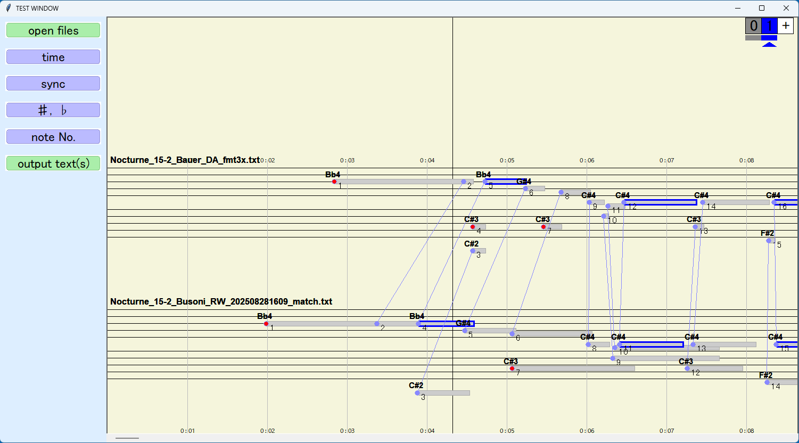
レイヤーは，表 2 の通りマッチングや注目する音(バー)の情報を管理します． 通常はレイヤー 0 とレイヤー 1 で十分かもしれませんが， 注目する音(バー)を複数参照したい場合などはレイヤー 2 以降も使用してください．
レイヤーは，画面右上の [ + ] をクリックすると追加され， 番号が書かれた四角い枠をクリックすることで選択できます． 選択されているレイヤーには下に▲のマークがつきますので， どのレイヤーを操作中か注意しながら編集を進めてください． (もっと利用しやすい方法にできそうでしたら修正します．)
| レイヤー | 役割 |
|---|---|
| レイヤー 0 | マッチングの編集 |
| レイヤー 0 以外 (レイヤー 1, レイヤー 2, ...) | 参照演奏側の注目したい音の入力について または 注目する音(バー)の編集 |
レイヤーは番号の下にある長方形の枠をクリックすると非表示にできます． 図 8 では， すべてのレイヤーを表示している場合(図 8 (左側))と， レイヤー 1 番とレイヤー 3 番を非表示にした場合(図 8 (右側))の例です． レイヤー 1 番とレイヤー 3 番を非表示にすると， 画面上ではレイヤー 0 番(マッチングの情報)とレイヤー 2 番の注目する音(バー)の枠(オレンジ色)のみが表示されます． 非表示のレイヤーは番号の下にある長方形の枠が白色に変り， もう一度クリックすると表示されます．
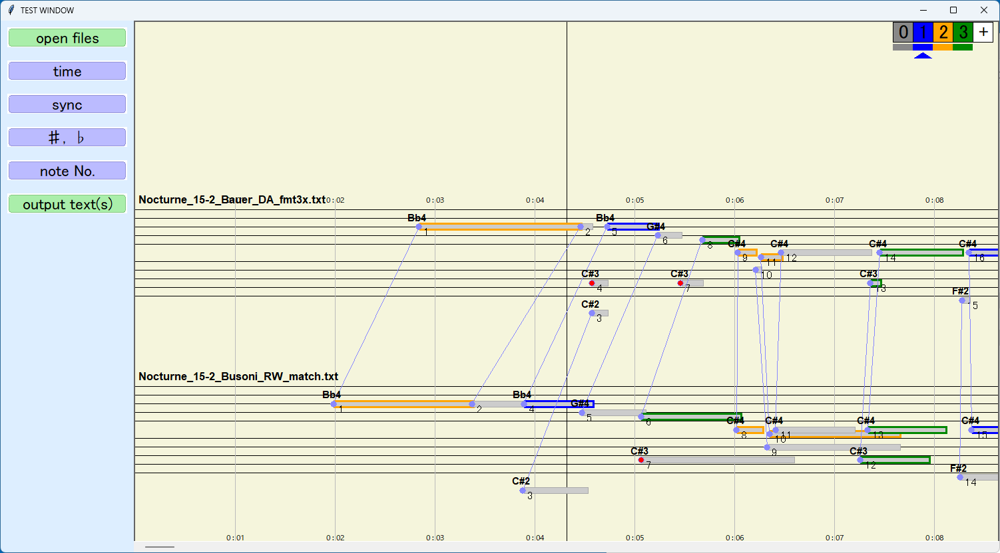
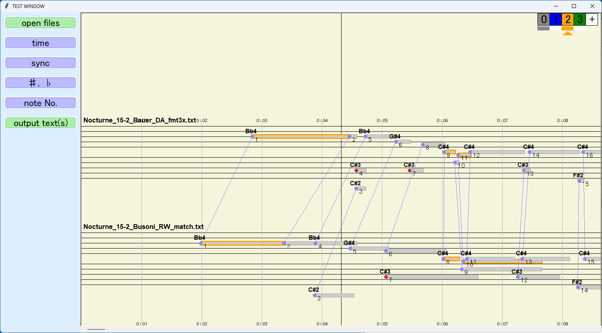
ここでは補助機能である 図 2 の (2)～(5) について各補助機能を説明します．
図 2 (2) は，時間の表示/非表示の違いで， 図 9 のように五線の上下にある時間(数値)表示が変わります． 時間の表示が不要な時は，非表示にしていた方が全体の表示速度が少し高速になります．
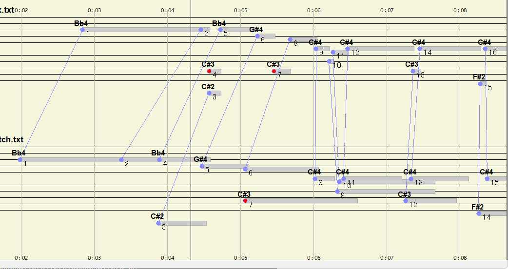
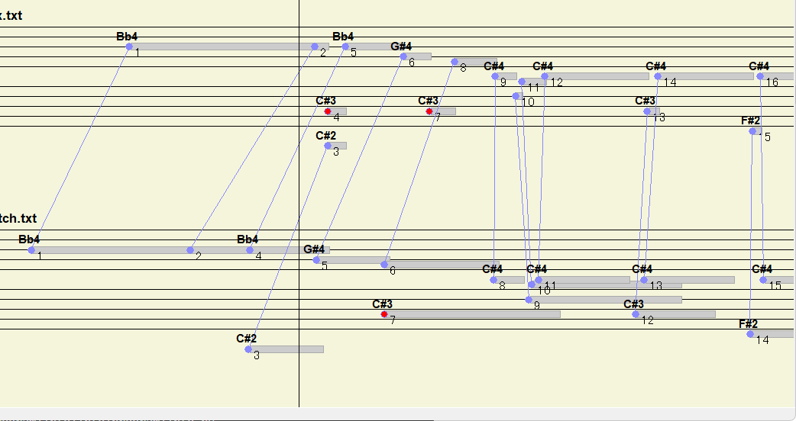
図 2 (3) は， 参照演奏と対象演奏について，画面中央の位置で現在演奏中の場所をそろえるかどうかです． 例えば参照演奏の演奏がゆっくりで時間が長く，対象演奏は速くて時間が短い場合に演奏の後半を表示すると 図 9 (右側) のように演奏が早く終わった方が見えなくなりますが， オンにすることで図 9 (左側) のように画面中央で演奏箇所がそろうようになります． オフにすると上下の時間が揃うので， 現在の演奏箇所の音(バー)で揃えたい(オン)か，または，時間を揃えたい(オフ)かで選択してください． オフの方が表示が速くなります．
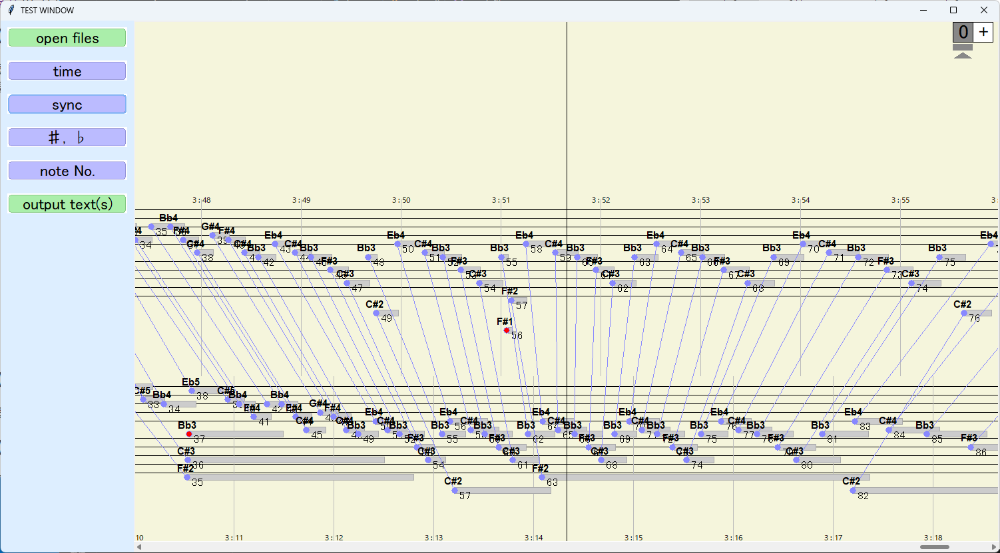
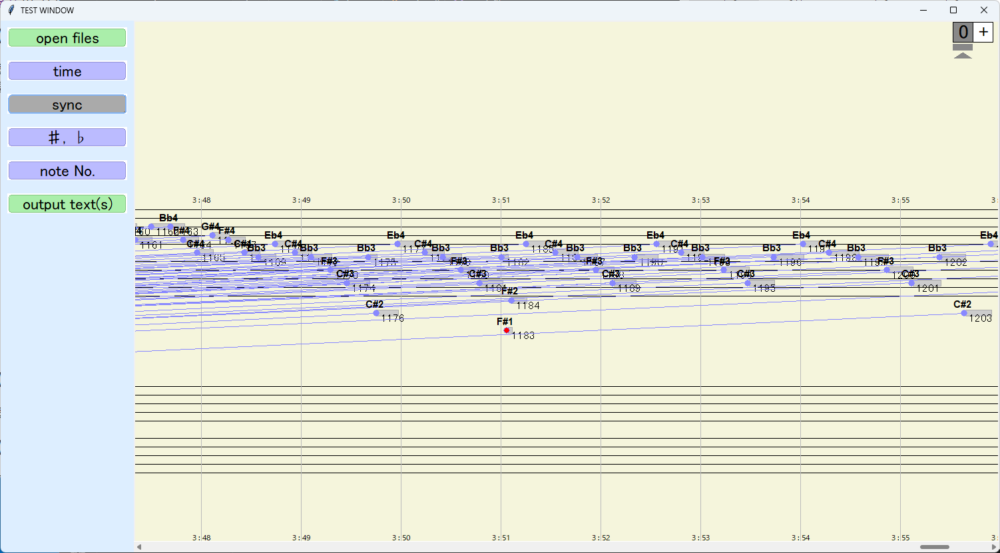
図 2 (4) は，#や♭の文字列表示の違いです． 図 11 のように 表示にすると画面上に Bb4 や C#4 などが音(バー)の上に表示されます． 非表示にすると文字列は表示されずに，♭の音(バー)は少し低い位置に，#の音(バー)は少し高い位置に表示されます． 五線上では#と♭は見分けづらいので，その場合は表示にしてください．
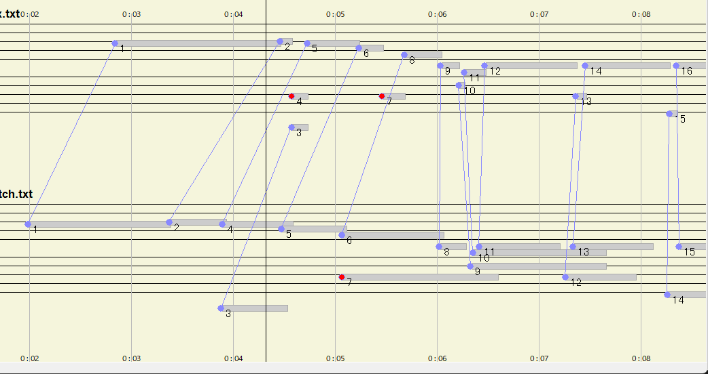
図 2 (5) は，それぞれの音(バー)に付けられている番号の表示/非表示です． 番号は演奏内の音(バー)の下側に付いていて，先頭から順に 1 から割り当てられています． 図 12 のように音(バー)の下につけられた番号が表示されたり消えたりします． 番号の表示が不要な時は，非表示にしていた方が全体の表示速度が少し高速になります．
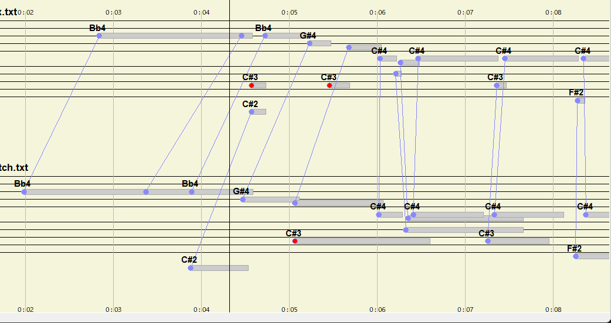
ここでは，マッチングの修正方法について説明します． 中村先生のシステム でも演奏によってはマッチングが合っていない場合があるので，その際に修正してください．
参照演奏と対象演奏のそれぞれの音(バー)の組み合わせで， ペアになっていて欲しいのにペアになっていない場合があります． その時は図 13 のように新しくペアを作ることができます． 手順は以下の通りです．
操作する際は音(バー)の先頭ではなく，音(バー)の中央あたりを選ぶと操作しやすいです．(今後の改善点です．)
このときすでにペアがある場合，参照演奏に元々あるペアは自動的に削除されますが，対象演奏に元々あるペアは残ります． 例えば，図 14 の場合は， 参照演奏の最初の音(バー)から対象演奏の先頭から 2 番目の音(バー)をペアにしていますが， 元々あった先頭の音(バー)ペアは消えていますが， 2 番目の音(バー)には 2 つのペアが残ったまま繋がっています． 不要な場合は削除の処理をしてください．
編集したマッチングの状態はファイルに保存することができます．
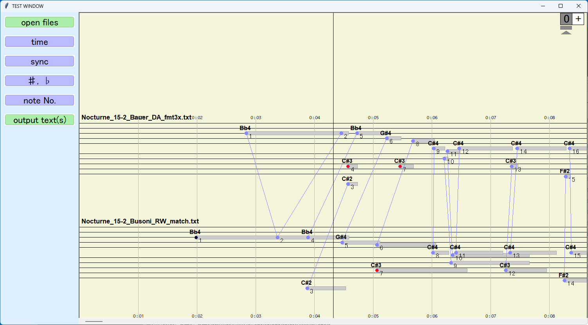
ペアを削除するには，ペアを表示している線の近くにマウスカーソルを合わせて(図 15 (左側))， ダブルクリックするとペアが削除されて線も消えます(図 15 (右側))． 図 15 では先頭から 2 つ目のマッチング(線)を削除しています
編集したマッチングの状態はファイルに保存することができます．
編集したマッチングデータはファイルに保存し，その後も再利用できます． 保存方法は，レイヤー 0 番を選んだ状態(レイヤー 0 番の下に▲がある状態)で， 左側のメニューの「output text(s)」をクリックします． ファイルは入力した*_match.txtがあるフォルダに *_(保存時の時間の数字 12 桁)_match.txtというファイル名で保存されます．
次回は元の *_fmt3x.txt と， この新しい *_(保存時の時間の数字 12 桁)_match.txt の 2 つのファイルを入力すると 修正したマッチングで作業をすることができます．
{kind=link}
{kind=link}
{kind=link}
{kind=link}
{kind=link}
{kind=link}
{kind=link}
{kind=link}
{kind=link}
{kind=link}
{kind=link}
{kind=link}
{kind=link}
{kind=link}
{kind=link}
{kind=link}